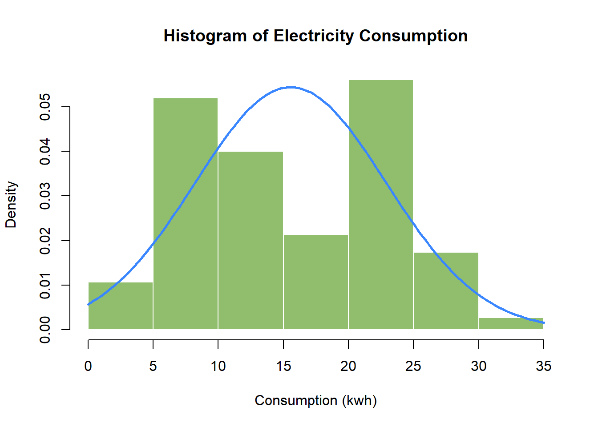
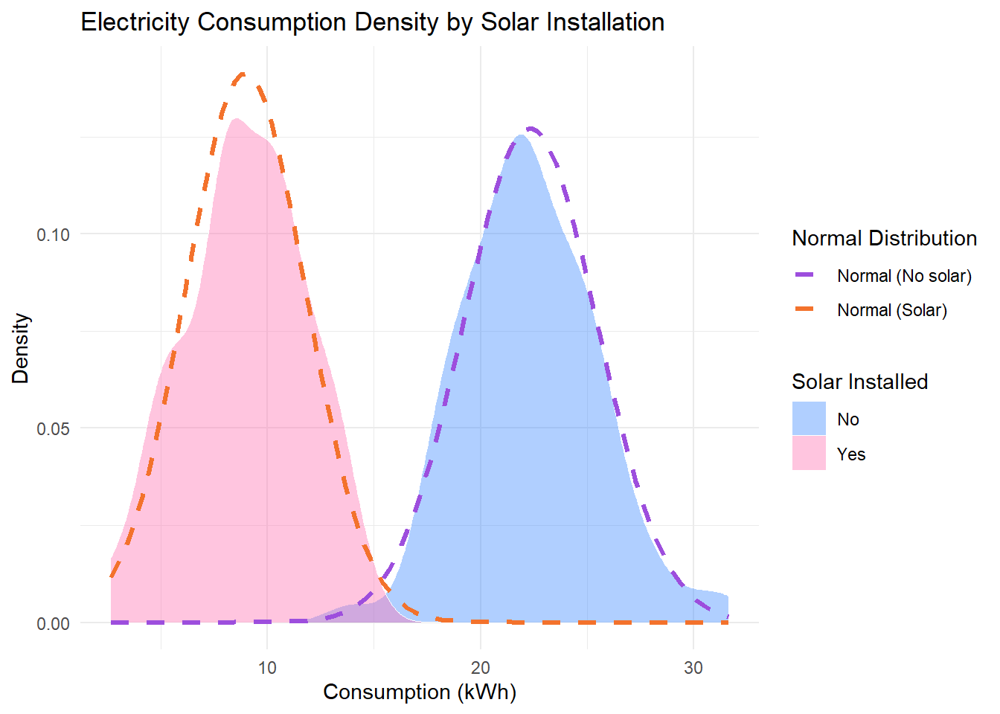
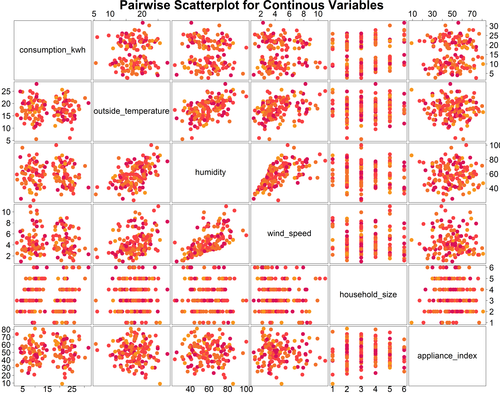
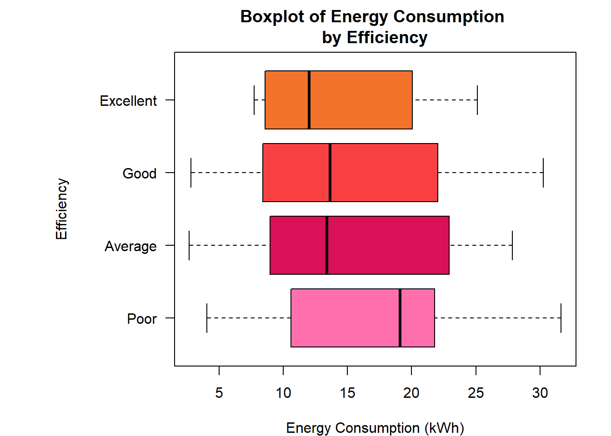
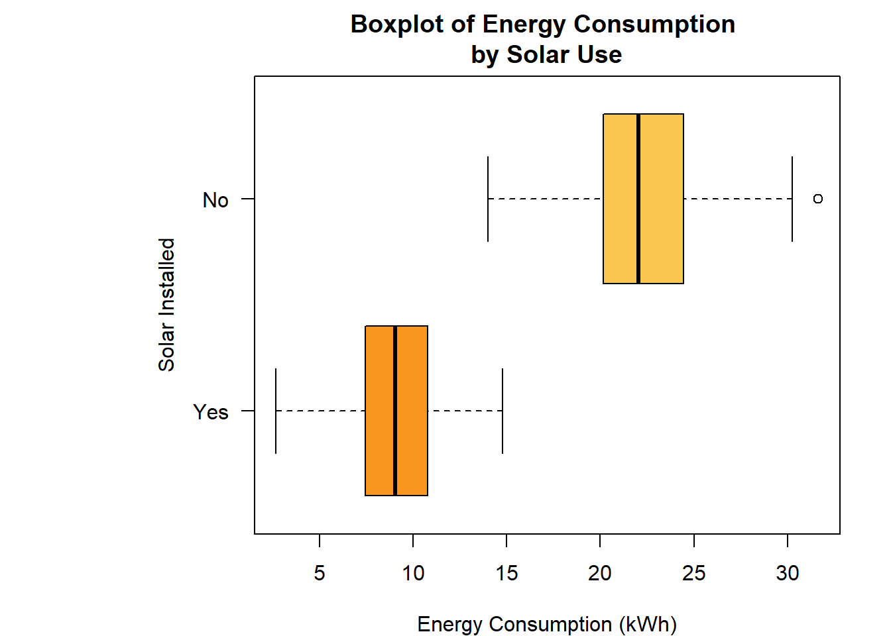

# We want to analyse the relationships between the variables: (outside_temperature, humidity, wind_speed, household_size, appliance_index, energy_efficiency, solar_installed, day_of_week, and holiday) against comsumption_kwh to inform demand-side management and efficiency policy#| results: hide#| warning: false#| message: false#| error: falseif (!requireNamespace("remotes", quietly =TRUE)) {install.packages("remotes")}remotes::install_github("MiguelRodo/DataTidyRodoSTA2005S")
Using GitHub PAT from the git credential store.
Skipping install of 'DataTidyRodoSTA2005S' from a github remote, the SHA1 (abb81a6c) has not changed since last install.
Use `force = TRUE` to force installation
# Plot a histogram of consumption_kwh (freq = FALSE, if using base R) with an overlaid normal density mean_kwh <-mean(consumption_kwh, na.rm =TRUE)sd_kwh <-sd(consumption_kwh, na.rm =TRUE)hist(consumption_kwh, freq =FALSE, main ="Histogram of Electricity Consumption", xlab ="Consumption (kwh)",ylab ="Density",col = col_palette[7], border ="white" )curve(dnorm(x, mean = mean_kwh, sd = sd_kwh), col = col_palette[11], lwd =2.5, add =TRUE )

# Plot the density of consumption_kwh, stratified by solar_installed, with overlaid normal densities. Comment on the shape, and consider why the densities changes from the unstratified case.solar_yes <- data %>%filter(solar_installed =="Yes")solar_no <- data %>%filter(solar_installed =="No")mean_solar <-mean(solar_yes$consumption_kwh, na.rm =TRUE)mean_no_solar <-mean(solar_no$consumption_kwh, na.rm =TRUE)sd_solar <-sd(solar_yes$consumption_kwh, na.rm =TRUE)sd_no_solar <-sd(solar_no$consumption_kwh, na.rm =TRUE)ggplot(data, aes(x = consumption_kwh, fill = solar_installed)) +geom_density(color ="white", linewidth =0, alpha =0.4) +stat_function(fun = dnorm, args =list(mean = mean_solar, sd = sd_solar),aes(linetype ="Normal (Solar)"),color = col_palette[4], linewidth =1.15) +stat_function(fun = dnorm, args =list(mean = mean_no_solar, sd = sd_no_solar),aes(linetype ="Normal (No solar)"),color = col_palette[12], linewidth =1.15) +scale_fill_manual(values=c("Yes"=col_palette[1], "No"=col_palette[11])) +scale_linetype_manual(values =c(2, 2), name ="Normal Distribution") +labs(title ="Density Plot of Electricity Consumption Density by Solar Installation", x ="Consumption (kWh)", y ="Density",fill ="Solar Installed" ) +theme_minimal()
Warning: Multiple drawing groups in `geom_function()`
ℹ Did you use the correct group, colour, or fill aesthetics?
Multiple drawing groups in `geom_function()`
ℹ Did you use the correct group, colour, or fill aesthetics?

Pairwise Plots:
# Create pairwise scatterplots for all continuous variables, including consumption_kwhcts_variables <- data %>% dplyr::select(consumption_kwh, outside_temperature, humidity, wind_speed, household_size, appliance_index)day_numeric <-as.numeric(factor(data$day_of_week, levels =c("Monday", "Tuesday", "Wednesday", "Thursday", "Friday", "Saturday", "Sunday"), ordered =TRUE))efficiency_numeric <-as.numeric(factor(data$energy_efficiency, levels =c("Poor", "Average", "Good", "Excellent"), ordered =TRUE))solar_numeric <-as.numeric(factor(data$solar_installed, levels =c("Yes", "No"), ordered =TRUE))#_________________________________________________________________# Graphpairs(x = cts_variables, pch =19, col = col_palette[efficiency_numeric +1], main =" Pairwise Scatterplot for Continous Variables", gap =0.5,las =1, cex =3, cex.labels =3, cex.axis =3,cex.main =3 )

Categorical Variable Plots:
# Plot consumption_kwh against each categorical variable. Namely: Solar_installed, Energy_efficient, days_of_the_week, and holidaypar(mar =c(4, 10, 3, 2))boxplot(consumption_kwh ~ efficiency_numeric, data = data,horizontal =TRUE, names =levels(energy_efficiency),xlab ="Energy Consumption (kWh)", ylab ="", main ="Boxplot of Energy Consumption \nby Efficiency",col = col_palette[1:4], las =1 )mtext("Efficiency", side =2, line =6, cex =1, font =1)

par(mar =c(4, 10, 3, 2))boxplot(consumption_kwh ~ solar_numeric, data = data, horizontal =TRUE,names =levels(solar_installed),xlab ="Energy Consumption (kWh)", ylab ="Solar Installed", main ="Boxplot of Energy Consumption \nby Solar Use",col = col_palette[5:6], las =1 )

par(mar =c(4, 10, 3, 2))boxplot(consumption_kwh ~ day_numeric, data = data, horizontal =TRUE,names =levels(day_of_week),xlab ="Energy Consumption (kWh)", ylab ="", main ="Boxplot of Energy Consumption \nby Weekday",col = col_palette[7:13], las =1 )mtext("Weekday", side =2, line =6, cex =1, font =1)
par(mar =c(4, 10, 3, 2))boxplot(consumption_kwh ~ holiday, data = data, horizontal =TRUE,names =c("No", "Yes"),xlab ="Energy Consumption (kWh)", ylab ="Holiday", main ="Boxplot of Energy Consumption \nby Holiday Status",col = col_palette[14:15], las =1 )

Comments: